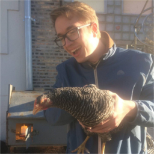

October 19-22, 2017
Brooklyn, NY
Brannon Dorsey

Brannon Dorsey is an artist, programmer, and researcher who uses technology and reproducible electronic media to navigate difficult terrain. He employs open software tools to create experiences that excite and empower individuals and collaborative communities rather than create passive users/consumers. Brannon's work encourages a digital literacy that celebrates the truly profound technological era that we now live while remaining skeptical of the ways that this technology is being used on and against us.
Presenting
Browser as Botnet
When surfing the web, browsers download and execute arbitrary JavaScript code they receive from websites they visit. What if high-traffic websites served obfuscated code that secretly borrowed clock cycles from their client’s web browser as a means of distributed computing? In this talk I will present research on the topic of using web browsers as zero-configuration, trojan-less botnets. The presentation will include a brief history of botnets, followed by an overview of techniques to build and deploy command-and-control botnet clients that run in-browser.
I will present exhaustive research that simulates the potential compute power of such a botnet using publicly available user-agent statistics and web traffic analytics from popular websites. What if Facebook or Google ran unnoticeably small “jobs” on your browser whenever you visited their websites? How much “free” compute could be leveraged from 2 billion users annually? With the rise of distributed computing, such a technique could be exploited to train or run machine learning models, mine a blockchain, or DDoS target servers.
In this talk we will explore the idea that the design and function of the web browser presents an opportunity for inherent exploitation. We will discuss both the ethical and nefarious use of such browser-based botnets; How they may be used in the wild and what unique affordances such a technique presents. The preparation and original research for this talk will be extensive as very little information on the subject currently exists. The talk will feature a live demo that includes conference attendees and will be followed by an open discussion into the applications and implications of deploying browser-based botnetworks.
Exhibiting
Holypager
Holypager is a system that intercepts all POCSAG pager messages in the city it resides and forwards them to one (holy) pager. The installation anonymizes all messages and forwards them randomly to one of three pagers on display. Each message is also printed on a contiguous role of receipt paper amassing a large pile of captured pages for gallery goers to peruse.
Pagers use an outdated protocol that requires all messages to be broadcast unencrypted to each pager in the area. It is the role of the individual pager to filter and display only the messages intended for its specific address. The pagers below have been reprogrammed to ignore this filter and receive every message in the city in real time. Today, these devices are primarily used in hospitals to communicate highly sensitive information between doctors and hospital staff.
Given the severity of the HIPPA Privacy Act, one would assume that appropriate measures would be taken to prevent this information from being publicly accessible to the general public. This project serves as a reminder that as the complexity and proliferation of digital systems increase the cultural and technological literacy needed to understand the safe and appropriate use of these systems often do not.


More Information

315 Ten Eyck St
Brooklyn, NY 11206